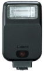

无忌
器材库
全部器材
产品年表
名词百科
榜单
器材库
> 闪光灯 > Speedlite 200E

佳能
Speedlite 200E
3.25
综合评分
分类
闪光灯
点评
0 条
图片
0 张
评测
0 篇
佳能Speedlite 200E是一款紧凑、经济型闪光灯，配合所有EOS相机提供完全的自动操作功能。闪光指数为20。
产品类型
闪光灯
综合评分
3.25分
无忌评测
暂无评测
规格参数
网友点评
(0)
产品图 / 样片
(0)
评测文章
(0)
详细规格
发布日期
未知
闪光指数
20 (ISO 100, m)
闪光涵盖范围
35mm镜头视角
闪光次数
400-4000次（使用碱性电池）
回电时间
0.5-4秒
闪光范围
1-5m
闪光曝光控制
TLL
电池
4枚AA电池
尺寸
64 x 104 x 41mm
重量
130g
该产品暂无存档的网友点评
该产品暂无存档的产品图
评测 / 相关文章
该产品暂无存档的评测文章